Idaho – Worksheet: cloze text, listening comprehension and word search - English
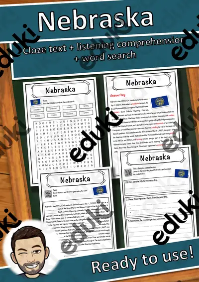
Nebraska – Worksheet: cloze text, listening and word search - English
Kansas – Worksheet: cloze text, listening and word search - English
Arkansas – Worksheet: cloze text, listening and word search - English
Nevada – Worksheet: cloze text, listening and word search - English
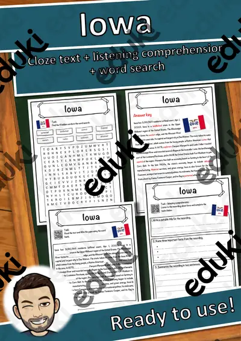
Iowa – Worksheet: cloze text, listening comprehension and word search - English
Utah – Worksheet: cloze text, listening comprehension and word search - English
Oregon – Worksheet: cloze text, listening and word search - English
Kentucky – Worksheet: cloze text, listening and word search - English
Louisiana – Worksheet: cloze text, listening and word search - English
Alabama – Worksheet: cloze text, listening and word search - English
Minnesota – Worksheet: cloze text, listening and word search - English
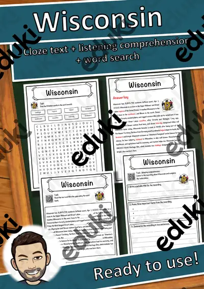
Wisconsin – Worksheet: cloze text, listening and word search - English
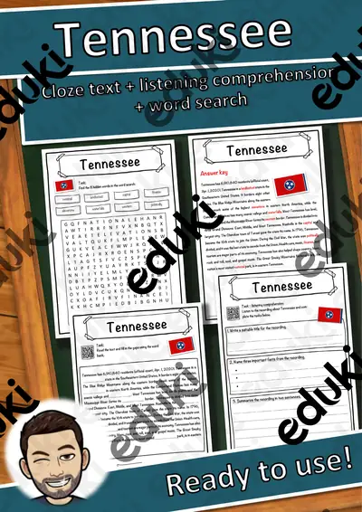
Tennessee – Worksheet: cloze text, listening and word search - English
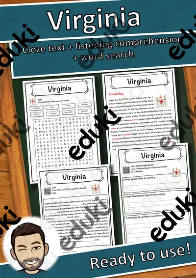
Virginia – Worksheet: cloze text, listening and word search - English
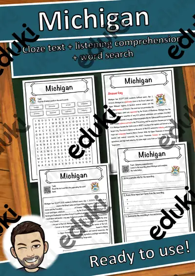
Michigan – Worksheet: cloze text, listening and word search - English
Ohio – Worksheet: cloze text, listening comprehension and word search - English
Illinois – Worksheet: cloze text, listening and word search - English
New Mexico – Worksheet: cloze text, listening and word search - English
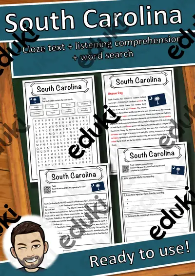
South Carolina – Worksheet: cloze text, listening and word search - English
Massachusetts – Worksheet: cloze text, listening and word search - English
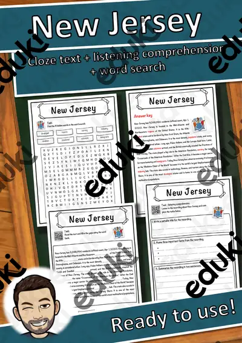
New Jersey – Worksheet: cloze text, listening and word search - English
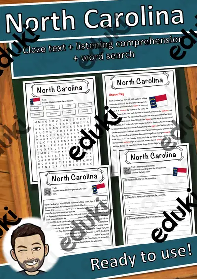
North Carolina – Worksheet: cloze text, listening and word search - English
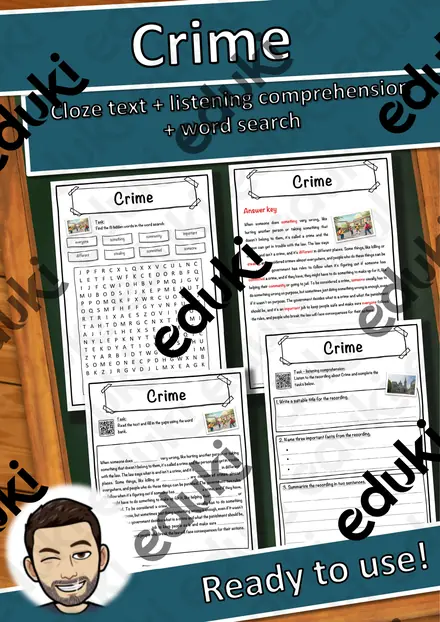
Crime – Worksheet: cloze text, listening comprehension and word search - English
Siegen – Worksheet: cloze text, listening comprehension and word search - English
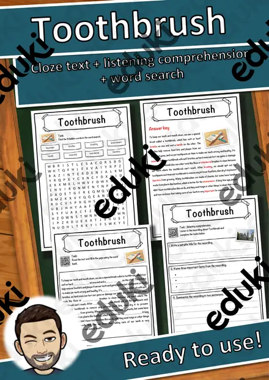
Toothbrush – Worksheet: cloze text, listening comprehension and word search - English
Verb – Worksheet: cloze text, listening comprehension and word search - English
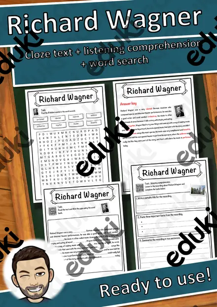
Richard Wagner – Worksheet: cloze text, listening comprehension and word search - English
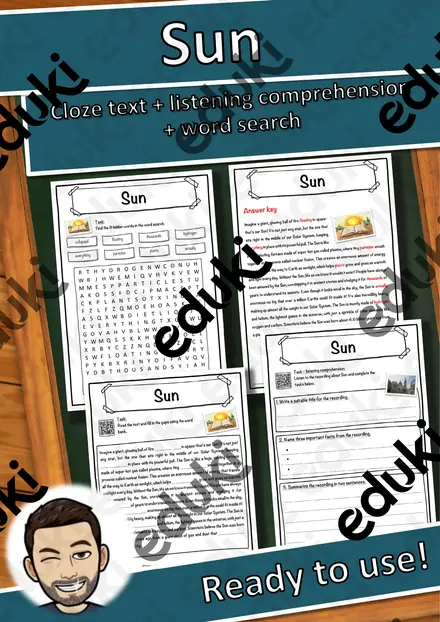
Sun – Worksheet: cloze text, listening comprehension and word search - English
Aarhus – Worksheet: cloze text, listening comprehension and word search - English
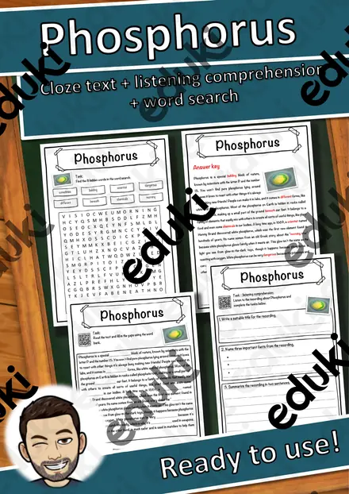
Phosphorus – Worksheet: cloze text, listening comprehension and word search - English
Venus – Worksheet: cloze text, listening comprehension and word search - English
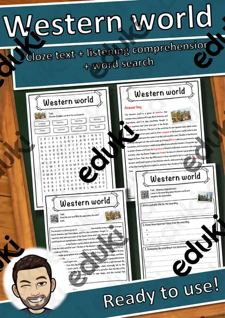
Western world – Worksheet: cloze text, listening comprehension and word search - English
Baptism – Worksheet: cloze text, listening comprehension and word search - English
Capital punishment – Worksheet: cloze text, listening comprehension and word search - English
Dentist – Worksheet: cloze text, listening comprehension and word search - English
Venezuela – Worksheet: cloze text, listening comprehension and word search - English
Richard I of England – Worksheet: cloze text, listening comprehension and word search - English
Czech Republic – Worksheet: cloze text, listening comprehension and word search - English
Nitrogen – Worksheet: cloze text, listening comprehension and word search - English
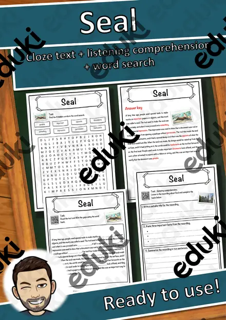
Seal – Worksheet: cloze text, listening comprehension and word search - English
Coat of arms – Worksheet: cloze text, listening comprehension and word search - English
Columbidae – Worksheet: cloze text, listening comprehension and word search - English
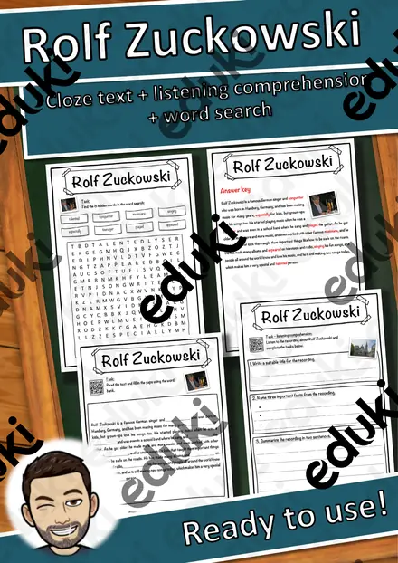
Rolf Zuckowski – Worksheet: cloze text, listening comprehension and word search - English
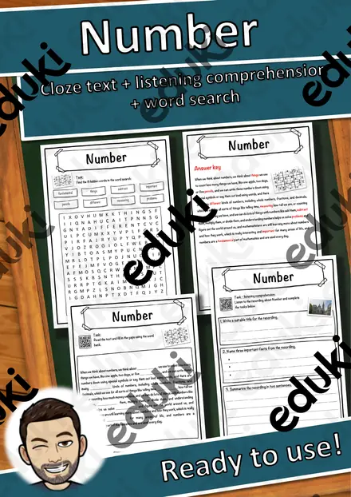
Number – Worksheet: cloze text, listening comprehension and word search - English
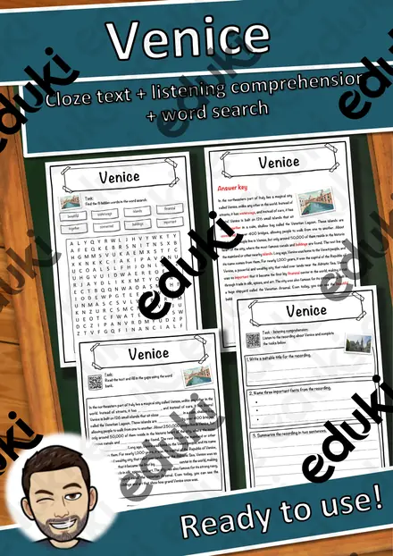
Venice – Worksheet: cloze text, listening comprehension and word search - English
Rhön Mountains – Worksheet: cloze text, listening comprehension and word search - English
Rhône – Worksheet: cloze text, listening comprehension and word search - English
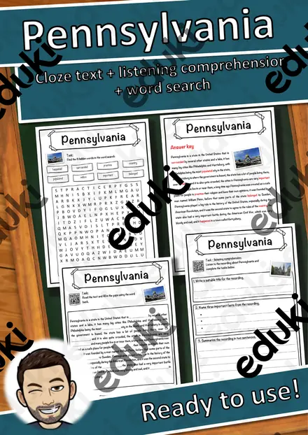
Pennsylvania – Worksheet: cloze text, listening comprehension and word search - English
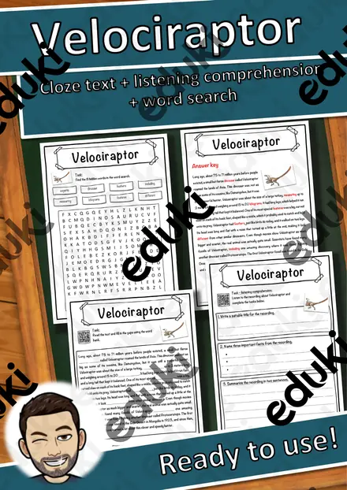
Velociraptor – Worksheet: cloze text, listening comprehension and word search - English
Weimar Classicism – Worksheet: cloze text, listening comprehension and word search - English
Human settlement – Worksheet: cloze text, listening comprehension and word search - English
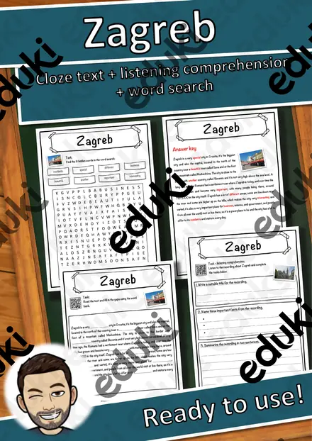
Zagreb – Worksheet: cloze text, listening comprehension and word search - English
Viola – Worksheet: cloze text, listening comprehension and word search - English
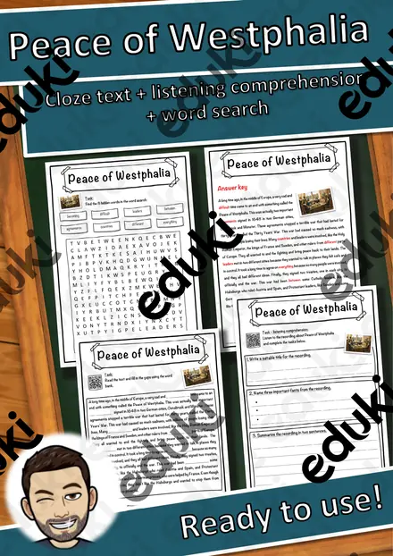
Peace of Westphalia – Worksheet: cloze text, listening comprehension and word search - English
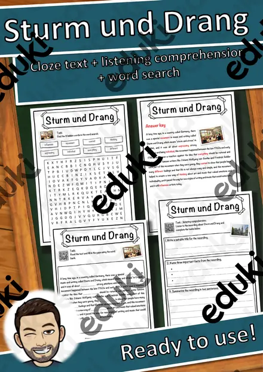
Sturm und Drang – Worksheet: cloze text, listening comprehension and word search - English
Rococo – Worksheet: cloze text, listening comprehension and word search - English
Salzgitter – Worksheet: cloze text, listening comprehension and word search - English
Daylight saving time – Worksheet: cloze text, listening comprehension and word search - English
Wolfgang Amadeus Mozart – Worksheet: cloze text, listening comprehension and word search - English
Salzburg – Worksheet: cloze text, listening comprehension and word search - English
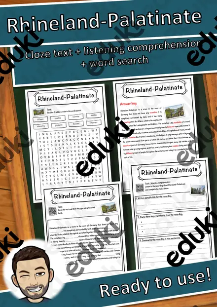
Rhineland-Palatinate – Worksheet: cloze text, listening comprehension and word search - English
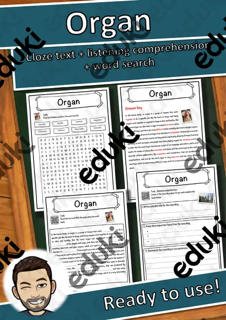
Organ – Worksheet: cloze text, listening comprehension and word search - English
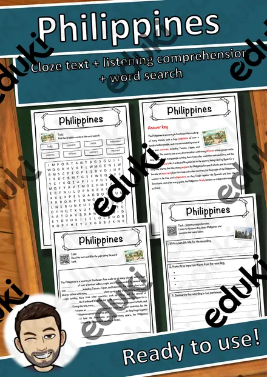
Philippines – Worksheet: cloze text, listening comprehension and word search - English
Vespinae – Worksheet: cloze text, listening comprehension and word search - English
Steve Jobs – Worksheet: cloze text, listening comprehension and word search - English
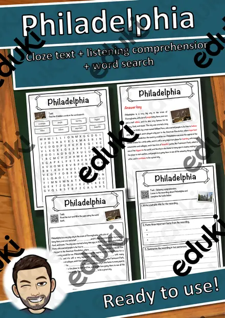
Philadelphia – Worksheet: cloze text, listening comprehension and word search - English
Aare – Worksheet: cloze text, listening comprehension and word search - English
Vatican – Worksheet: cloze text, listening comprehension and word search - English
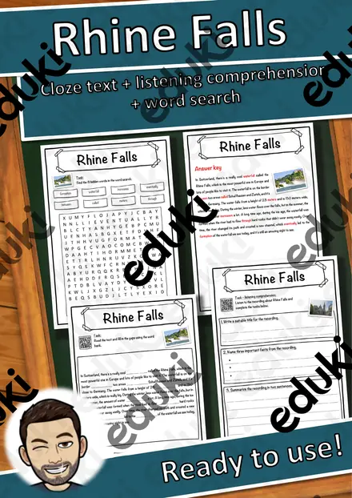
Rhine Falls – Worksheet: cloze text, listening comprehension and word search - English
Aachen Cathedral – Worksheet: cloze text, listening comprehension and word search - English
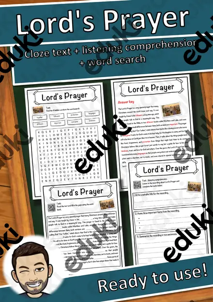
Lord's Prayer – Worksheet: cloze text, listening comprehension and word search - English
Orange – Worksheet: cloze text, listening comprehension and word search - English
Chad – Worksheet: cloze text, listening comprehension and word search - English
Karl May – Worksheet: cloze text, listening comprehension and word search - English
Artemis – Worksheet: cloze text, listening comprehension and word search - English
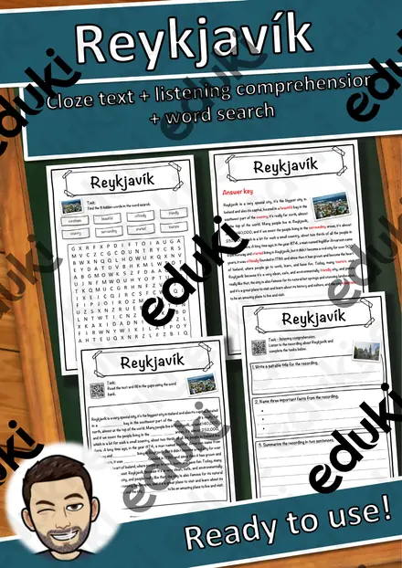
Reykjavík – Worksheet: cloze text, listening comprehension and word search - English
Boron – Worksheet: cloze text, listening comprehension and word search - English
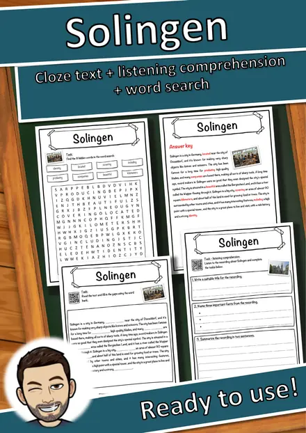
Solingen – Worksheet: cloze text, listening comprehension and word search - English
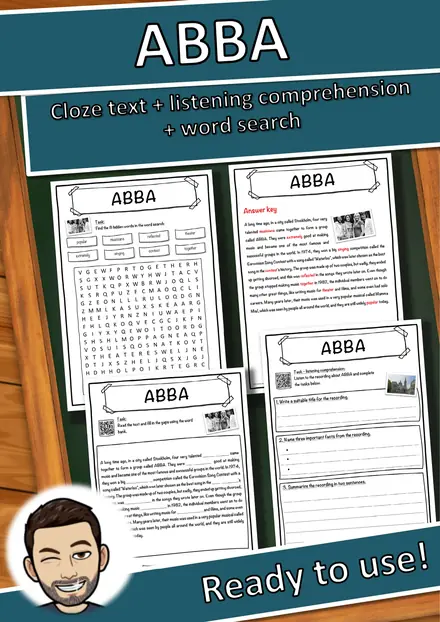
ABBA – Worksheet: cloze text, listening comprehension and word search - English
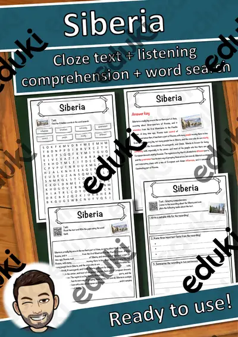
Siberia – Worksheet: cloze text, listening comprehension and word search - English
Franz Marc – Worksheet: cloze text, listening comprehension and word search - English
Carnival – Worksheet: cloze text, listening comprehension and word search - English
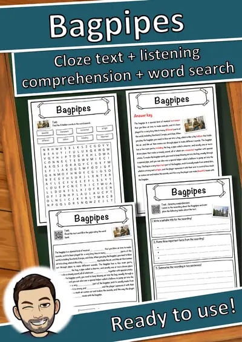
Bagpipes Music worksheet: cloze text, listening comprehension and word search - English
Tam-tam Music worksheet: cloze text, listening comprehension and word search - English
Sleigh bells Music worksheet: cloze text, listening comprehension and word search - English
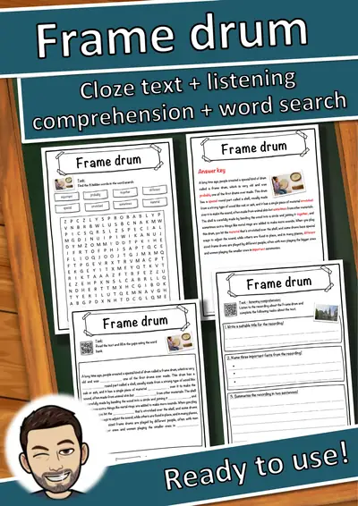
Frame drum Music worksheet: cloze text, listening comprehension and word search - English
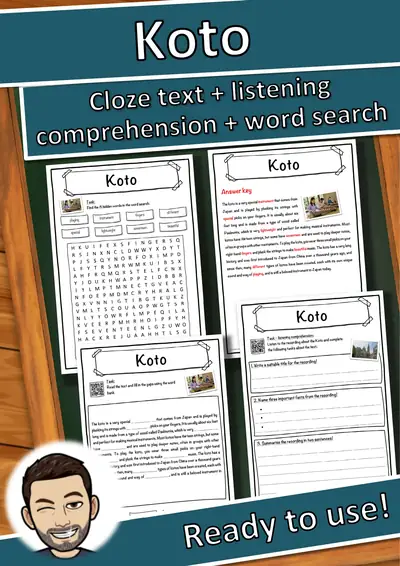
Koto Music worksheet: cloze text, listening comprehension and word search - English
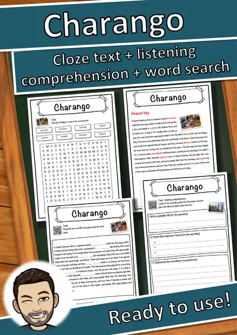
Charango Music worksheet: cloze text, listening comprehension and word search - English
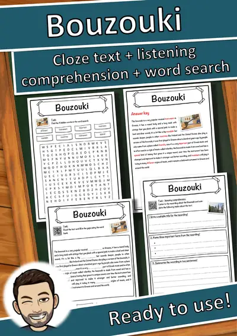
Bouzouki Music worksheet: cloze text, listening comprehension and word search - English
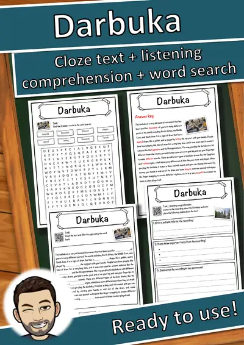
Darbuka Music worksheet: cloze text, listening comprehension and word search - English
Tabla Music worksheet: cloze text, listening comprehension and word search - English
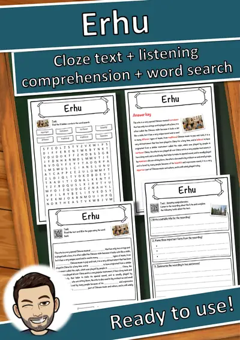
Erhu Music worksheet: cloze text, listening comprehension and word search - English
Oud Music worksheet: cloze text, listening comprehension and word search - English
Washboard Music worksheet: cloze text, listening comprehension and word search - English
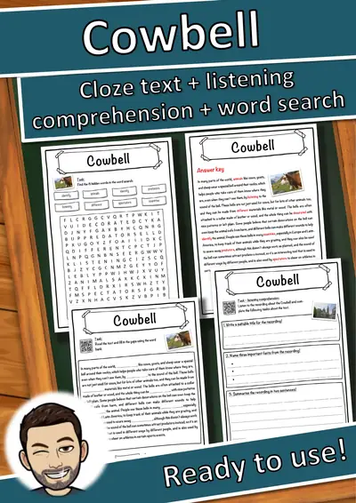
Cowbell Music worksheet: cloze text, listening comprehension and word search - English
Claves Music worksheet: cloze text, listening comprehension and word search - English
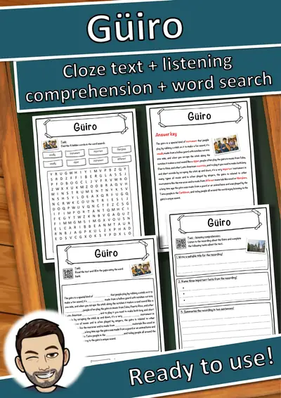
Güiro Music worksheet: cloze text, listening comprehension and word search - English
Standing bell Music worksheet: cloze text, listening comprehension and word search - English
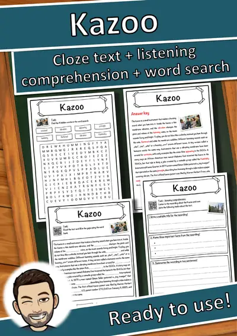
Kazoo Music worksheet: cloze text, listening comprehension and word search - English
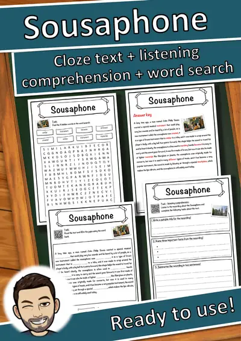
Sousaphone Music worksheet: cloze text, listening comprehension and word search - English
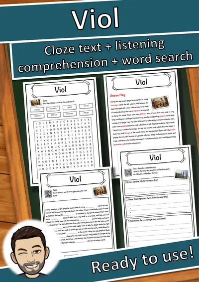
Viol Music worksheet: cloze text, listening comprehension and word search - English
Shawm Music worksheet: cloze text, listening comprehension and word search - English
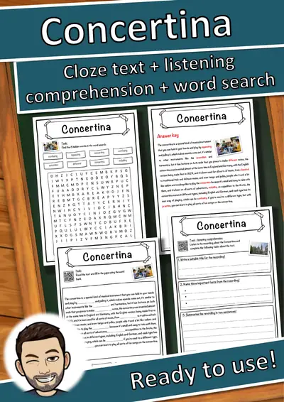
Concertina Music worksheet: cloze text, listening comprehension and word search - English
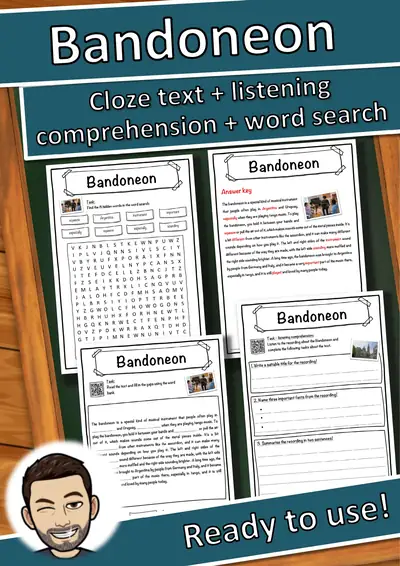
Bandoneon Music worksheet: cloze text, listening comprehension and word search - English
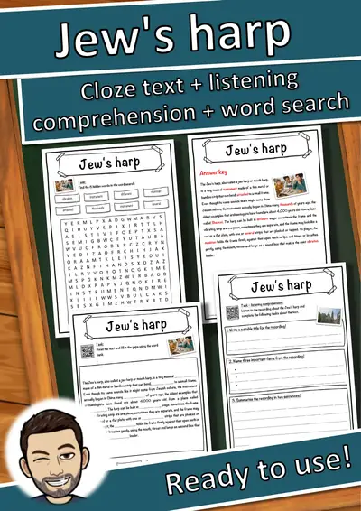
Jew's harp Music worksheet: cloze text, listening comprehension and word search - English
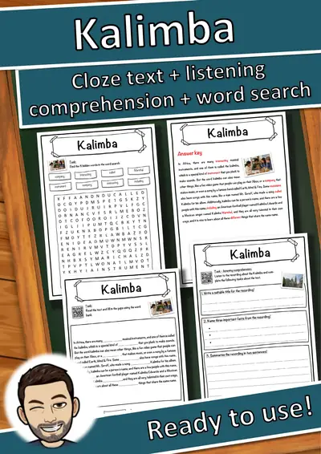
Kalimba Music worksheet: cloze text, listening comprehension and word search - English
Drum machine Music worksheet: cloze text, listening comprehension and word search - English
Synthesizer Music worksheet: cloze text, listening comprehension and word search - English
Theremin Music worksheet: cloze text, listening comprehension and word search - English
Tom-tom drum Music worksheet: cloze text, listening comprehension and word search - English
Steelpan Music worksheet: cloze text, listening comprehension and word search - English
Handpan Music worksheet: cloze text, listening comprehension and word search - English
Tubular bells Music worksheet: cloze text, listening comprehension and word search - English
Rattle Music worksheet: cloze text, listening comprehension and word search - English
Maraca Music worksheet: cloze text, listening comprehension and word search - English
Castanets Music worksheet: cloze text, listening comprehension and word search - English
Gong Music worksheet: cloze text, listening comprehension and word search - English
Cymbal Music worksheet: cloze text, listening comprehension and word search - English
Tambourine Music worksheet: cloze text, listening comprehension and word search - English
Triangle Music worksheet: cloze text, listening comprehension and word search - English
Glockenspiel Music worksheet: cloze text, listening comprehension and word search - English
Vibraphone Music worksheet: cloze text, listening comprehension and word search - English
Conga Music worksheet: cloze text, listening comprehension and word search - English
Bongo Music worksheet: cloze text, listening comprehension and word search - English
Cajón Music worksheet: cloze text, listening comprehension and word search - English
Djembe Music worksheet: cloze text, listening comprehension and word search - English
Euphonium Music worksheet: cloze text, listening comprehension and word search - English
Cornet Music worksheet: cloze text, listening comprehension and word search - English
Flugelhorn Music worksheet: cloze text, listening comprehension and word search - English
French horn Music worksheet: cloze text, listening comprehension and word search - English
Vuvuzela Music worksheet: cloze text, listening comprehension and word search - English
Didgeridoo Music worksheet: cloze text, listening comprehension and word search - English
Alphorn Music worksheet: cloze text, listening comprehension and word search - English
Ocarina Music worksheet: cloze text, listening comprehension and word search - English
Pan flute Music worksheet: cloze text, listening comprehension and word search - English
Celesta Music worksheet: cloze text, listening comprehension and word search - English
Melodica Music worksheet: cloze text, listening comprehension and word search - English
Harmonica Music worksheet: cloze text, listening comprehension and word search - English
Pump organ Music worksheet: cloze text, listening comprehension and word search - English
Harpsichord Music worksheet: cloze text, listening comprehension and word search - English
Lyre Music worksheet: cloze text, listening comprehension and word search - English
Nyckelharpa Music worksheet: cloze text, listening comprehension and word search - English
Hurdy-gurdy Music worksheet: cloze text, listening comprehension and word search - English
Lute Music worksheet: cloze text, listening comprehension and word search - English
Hackbrett Music worksheet: cloze text, listening comprehension and word search - English
Sitar Music worksheet: cloze text, listening comprehension and word search - English
Balalaika Music worksheet: cloze text, listening comprehension and word search - English
Zither Music worksheet: cloze text, listening comprehension and word search - English
Mandolin Music worksheet: cloze text, listening comprehension and word search - English
Electric bass Music worksheet: cloze text, listening comprehension and word search - English
Electric guitar Music worksheet: cloze text, listening comprehension and word search - English
Banjo Music worksheet: cloze text, listening comprehension and word search - English
Ukulele Music worksheet: cloze text, listening comprehension and word search - English
Marimba Music worksheet: cloze text, listening comprehension and word search - English
Keine Materialien gefunden – versuch einen anderen Suchbegriff oder Filter.